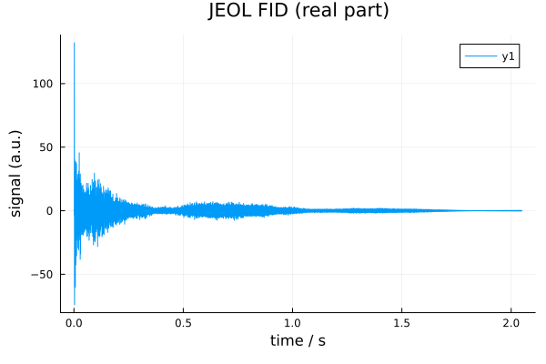

Working with SpectData
SpectData is the central data representation in NMRflux.jl. It holds an N dimensional numerical array together with one coordinate vector per dimension, and it subtypes AbstractArray{T,N}.
struct SpectData{T,N} <: AbstractArray{T,N}
dat::AbstractArray{T,N}
coord::NTuple{N,AbstractVector}
endBecause it implements the Julia array interface, ordinary indexing, slicing and broadcasting all work on it directly, and it can be passed to functions that expect an array. The point of the type is bookkeeping: the values and the physical axes travel together, so no processing step has to be told what its own x axis is.
1. Loading a JEOL example
using NMRflux
using NMRflux.Examples
using Plots: plot, savefig
data_jeol = NMRflux.Examples.Data["Spheroid culture medium"]
jdf_file = joinpath(data_jeol["path"], "yp-5-fu-2.5-100.jdf")
params_jeol, data_td_jeol = NMRflux.load(jdf_file, :JEOL)
plot(coords(data_td_jeol, 1), real.(data_td_jeol.dat);
xlabel = "time / s",
ylabel = "signal (a.u.)",
title = "JEOL FID (real part)"
)
typeof(data_td_jeol)SpectData{ComplexF64, 1}2. Reading the coordinates
coords(S) returns the full tuple of coordinate vectors and coords(S, k) returns the coordinate of dimension k. Both are exported, and both read the same coord field you can reach directly.
t_axis = coords(data_td_jeol, 1)
(first(t_axis), last(t_axis), length(t_axis))(0.0, 2.0485271999999997, 23072)Reading S.coord[k] gives the same vector. This documentation uses whichever form is clearer in context.
3. Indexing and slicing
A range returns a new SpectData carrying the matching slice of the coordinate:
data_td_jeol[1:5](5,) SpectData Vector{ComplexF64} with coords:(0.0:8.879230202418619e-5:0.00035516920809674477,)Integer indices are dropped from the coordinate tuple, exactly as they are dropped from the array shape. Slicing a two dimensional dataset at a fixed row therefore hands back a one dimensional SpectData with the correct remaining axis. The raw values stay available through dat:
data_td_jeol.dat[1:5]5-element Vector{ComplexF64}:
-2.1497944882665717e-7 - 7.707002455031156e-6im
-0.00013950422110987898 - 0.00017234635428217768im
-0.0051844162649977935 - 0.05157299135423599im
-0.08807038729465194 - 0.21358801463142338im
-0.08907652978845076 + 0.1320968426880609imBroadcasts work directly on the object and preserve the coordinates. real.(S) comes back as a SpectData, not a bare array, and imag. behaves the same way:
real.(data_td_jeol)[1:5](5,) SpectData Vector{Float64} with coords:(0.0:8.879230202418619e-5:0.00035516920809674477,)4. Building a SpectData by hand
The two argument constructor takes the data and a tuple of coordinates, one per dimension:
n = 8
SpectData(collect(1.0:n), (range(0.0, step=0.1, length=n),))(8,) SpectData Vector{Float64} with coords:(0.0:0.1:0.7,)The single argument constructor fills in unit ranges, which is what processors use internally when they are handed a plain array:
SpectData(collect(1.0:4.0))(4,) SpectData Vector{Float64} with coords:(1:4,)5. Higher dimensions
For an N dimensional dataset, dat becomes an N dimensional array and coord[k] holds the physical coordinate for dimension k. FourierTransformPlan replaces the transformed axis with a frequency axis, ZeroFill extends it, and every other processor passes the coordinates through untouched.
S2 = SpectData(reshape(collect(1.0:12.0), 4, 3),
(range(0.0, step=0.25, length=4), range(-1.0, step=1.0, length=3)))
coords(S2)(0.0:0.25:0.75, -1.0:1.0:1.0)Slicing it at a fixed row drops the first coordinate and keeps the second:
row = S2[2, :]
(size(row.dat), coords(row, 1))((3,), -1.0:1.0:1.0)The processors that consume these objects are covered in Classical Processing Pipeline.